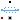

Loss models
Extends from Modelica.Icons.Package (Icon for standard packages).
| Name | Description |
|---|---|
|  StrayLoad | Model of stray load losses dependent on current and speed |
| Model of permanent magnet losses dependent on current and speed |
Model of stray load losses dependent on current and speed
Stray load losses are modeled similar to standards EN 60034-2 and IEEE 512, i.e., they are dependent on square of current, but without scaling them to zero at no-load current.
For an estimation of dependency on varying angular velocity see: [Lang1984]
The stray load losses are modeled such way that they do not cause a voltage drop in the electric circuit. Instead, the dissipated losses are considered through an equivalent braking torque at the shaft.
The stray load loss torque is
tau = PRef/wRef * (i/IRef)^2 * (w/wRef)^power_w
where i is the current of the machine and w is the actual angular velocity.
The dependency of the stray load torque on the angular velocity is modeled by the exponent power_w.
If it is desired to neglect stray load losses, set strayLoadParameters.PRef = 0 (this is the default).
Extends from Modelica.Electrical.QuasiStatic.Polyphase.Interfaces.OnePort (Two plugs, reference connection and declaration of voltage and current), Modelica.Electrical.Machines.Interfaces.FlangeSupport (Shaft and support), Modelica.Thermal.HeatTransfer.Interfaces.PartialElementaryConditionalHeatPortWithoutT (Partial model to include a conditional HeatPort in order to dissipate losses, used for textual modeling, i.e., for elementary models).
| Name | Description |
|---|---|
| m | Number of phases |
| strayLoadParameters | Stray load loss parameters |
| useHeatPort | = true, if heatPort is enabled |
| Name | Description |
|---|---|
| plug_p | Positive quasi-static polyphase plug |
| plug_n | Negative quasi-static polyphase plug |
| flange | Shaft end |
| support | Housing and support |
| heatPort | Optional port to which dissipated losses are transported in form of heat |
 Modelica.Magnetic.QuasiStatic.FundamentalWave.Losses.PermanentMagnetLosses
Modelica.Magnetic.QuasiStatic.FundamentalWave.Losses.PermanentMagnetLossesModel of permanent magnet losses dependent on current and speed
Permanent magnet losses are modeled dependent on current and speed.
The permanent magnet losses are modeled such way that they do not cause a voltage drop in the electric circuit. Instead, the dissipated losses are considered through an equivalent braking torque at the shaft.
The permanent magnet loss torque is
tau = PRef/wRef * (c + (1 - c) * (i/IRef)^power_I) * (w/wRef)^power_w
where i is the current of the machine and w is the actual angular velocity.
The parameter c designates the part of the permanent magnet losses that are present even at current = 0, i.e. independent of current.
The dependency of the permanent magnet loss torque on the stator current is modeled by the exponent power_I.
The dependency of the permanent magnet loss torque on the angular velocity is modeled by the exponent power_w.
Permanent magnet loss parameters
If it is desired to neglect permanent magnet losses, set strayLoadParameters.PRef = 0 (this is the default).
Extends from Modelica.Electrical.Machines.Interfaces.FlangeSupport (Shaft and support), Modelica.Thermal.HeatTransfer.Interfaces.PartialElementaryConditionalHeatPortWithoutT (Partial model to include a conditional HeatPort in order to dissipate losses, used for textual modeling, i.e., for elementary models).
| Name | Description |
|---|---|
| m | Number of phases |
| permanentMagnetLossParameters | Permanent magnet loss parameters |
| useHeatPort | = true, if heatPort is enabled |
| Name | Description |
|---|---|
| flange | Shaft end |
| support | Housing and support |
| heatPort | Optional port to which dissipated losses are transported in form of heat |